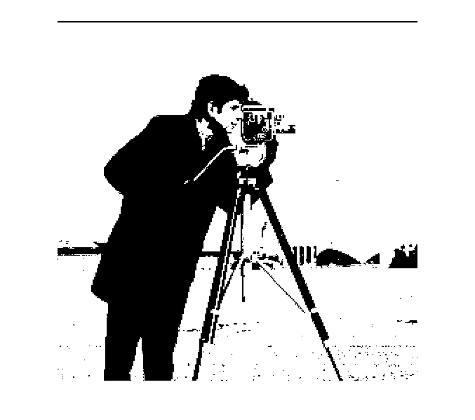

clc;
clear all;
close all;
dirName=strcat('D:\matlab2011a1\matlab2011a\bin\PRML657\Ass3');
img=imread(strcat(dirName,'\','cameraman.jpg'));
[counts,x] = imhist(img);
N=0;
for i=1:256
N=N+counts(i);
end
pcounts=zeros(256,1);
for i=1:256
pcounts(i)=counts(i)/N;
end
wF=zeros(256,1);wB=zeros(256,1);
mF=zeros(256,1);mB=zeros(256,1);
vF=zeros(256,1);vB=zeros(256,1);
J=zeros(256,1);
for k=1:256
for i=1:k
wF(k)=wF(k)+pcounts(i);
end
wB(k)=1-wF(k);
for i=1:k
mF(k)=mF(k)+ (i*pcounts(i))/wF(k);
end
for i=k+1:256
mB(k)=mB(k)+ (i*pcounts(i))/wB(k);
end
for i=1:k
vF(k)=vF(k)+ (((i-mF(k))^2)*pcounts(i))/wF(k);
end
for i=k+1:256
vB(k)=vB(k)+ (((i-mB(k))^2)*pcounts(i))/wB(k);
end
J(k)=((mF(k)-mB(k))^2)/((wF(k)*vF(k))+(wB(k)*vB(k)));
end
[C,I]=max(J);
sgmImg=img;
s=size(img);
for i=1:s(1)
for j=1:s(2)
if img(i,j)>= 84
sgmImg(i,j)=255;
end
if img(i,j)< 84
sgmImg(i,j)=0;
end
end
end
imshow(sgmImg);

folderNames=cell(40,1);
for k=1:40
folderNames{k}=['s' num2str(k)];
end
imGalleryCell=cell(40,5);
imMean=double(zeros(112,92));
for k=1:40
dirName=strcat('D:\matlab2011a1\matlab2011a\bin\PRML657\Ass3\Gallery\',folderNames{k});
imageFiles=dir(fullfile(dirName,'*.pgm'));
numel(imageFiles);
for i=1:numel(imageFiles)
img=imread(strcat(dirName,'\',imageFiles(i).name));
imGalleryCell{k,i}=double(img)/255;
imMean=imMean+imGalleryCell{k,i};
end
end
imMean=imMean/200;
totalCell=cell(1,200);
for k=1:40
for i=1:numel(imageFiles)
totalCell{(5*k)+i-5}=imGalleryCell{k,i};
end
end
for i=1:200
totalCell{i}=totalCell{i}(:);
end
for i=1:200
totalCell{i}=totalCell{i}-imMean(:);
end
X=cell2mat(totalCell);
Cov=(X'*X)/200;
lambda=eig(Cov);
[V,D]=eig(Cov);
for i=1:200
EigUnitVec(:,i)=X*V(:,i)/norm(X*V(:,i));
end
folderNames=cell(40,1);
for k=1:40
folderNames{k}=['s' num2str(k)];
end
imProbeCell=cell(40,5);
for k=1:40
dirName=strcat('D:\matlab2011a1\matlab2011a\bin\PRML657\Ass3\Probe\',folderNames{k});
imageFiles=dir(fullfile(dirName,'*.pgm'));
numel(imageFiles);
for i=1:numel(imageFiles)
img=imread(strcat(dirName,'\',imageFiles(i).name));
imProbeCell{k,i}=double(img)/255;
end
end
imGalleryProjCell=cell(40,5);
for k=1:40
for z=1:5
Xproj=zeros(200,1);
Xtest=imGalleryCell{k,z};
for i=200:-1:(200-199)
Xproj(201-i) = (((Xtest(:)-imMean(:))')*EigUnitVec(:,i));
end
imGalleryProjCell{k,z}=Xproj;
end
end
imProbeProjCell=cell(40,5);
for k=1:40
for z=1:5
Xproj=zeros(200,1);
Xtest=imProbeCell{k,z};
for i=200:-1:(200-199)
Xproj(201-i) =(((Xtest(:)-imMean(:))')*EigUnitVec(:,i));
end
imProbeProjCell{k,z}=Xproj;
end
end
S=cell(40,1);
imGalleryProjMean=cell(40,1);
for i=1:40
imGalleryProjMean{i}=double(zeros);
for k=1:5
imGalleryProjMean{i}=imGalleryProjMean{i}+imGalleryProjCell{i,k};
end
imGalleryProjMean{i}=imGalleryProjMean{i}/5;
end
for i=1:40
S{i}=double(zeros(200,200));
for k=1:5
S{i}=S{i}+(imGalleryProjCell{i,k}-imGalleryProjMean{i})*(imGalleryProjCell{i,k}-imGalleryProjMean{i})';
end
end
Sw=double(zeros(200,200));
for i=1:40
Sw=Sw+S{i};
end
imGalleryProjTotalMean=double(zeros);
for i=1:40
for k=1:5
imGalleryProjTotalMean=imGalleryProjTotalMean+imGalleryProjCell{i,k};
end
end
imGalleryProjTotalMean=imGalleryProjTotalMean/200;
Sb=double(zeros);
for i=1:40
Sb=Sb+(5*(imGalleryProjMean{i}-imGalleryProjTotalMean)*(imGalleryProjMean{i}-imGalleryProjTotalMean)');
end
SwReg=Sw+(0.1*eye(200));
Jf=(SwReg)\Sb;
[Vf,Df]=eigs(Jf,39);
for i=1:39
norm1=norm(Vf(:,i));
DMAEigUnitVec(:,i)=Vf(:,i)/norm1;
end
l=[10,25,39];
for p=1:3
imGalleryDMAProjCell=cell(40,5);
for k=1:40
for z=1:5
Xproj=double(zeros(l(p),1));
Xtest=imGalleryProjCell{k,z};
for i=1:l(p)
Xproj(i) = (((Xtest(:)-imGalleryProjTotalMean(:))')*DMAEigUnitVec(:,i));
end
imGalleryDMAProjCell{k,z}=Xproj;
end
end
imProbeDMAProjCell=cell(40,5);
for k=1:40
for z=1:5
Xproj=double(zeros(l(p),1));
Xtest=imProbeProjCell{k,z};
for i=1:l(p)
Xproj(i) = (((Xtest(:)-imGalleryProjTotalMean(:))')*DMAEigUnitVec(:,i));
end
imProbeDMAProjCell{k,z}=Xproj;
end
end
Distance=zeros(200,1);
NN=zeros(40,5,3);
result=0;
for i=1:40
for j=1:5
for k=1:40
for z=1:5
a=norm(imProbeDMAProjCell{i,j}-imGalleryDMAProjCell{k,z});
Distance((5*k)+z-5)=(a);
end
end
[C I]=sort(Distance);
class=floor((I(1:3)-1)/5)+1;
if (mode(class) == i)
result = result + 1;
end
end
end
display(['3 nearest neighbour classfier accuracy for ' num2str(l(p)) ' dimensional space is ' num2str(result/2) '%']);
end
3 nearest neighbour classfier accuracy for 10 dimensional space is 84.5%
3 nearest neighbour classfier accuracy for 25 dimensional space is 89.5%
3 nearest neighbour classfier accuracy for 39 dimensional space is 91%